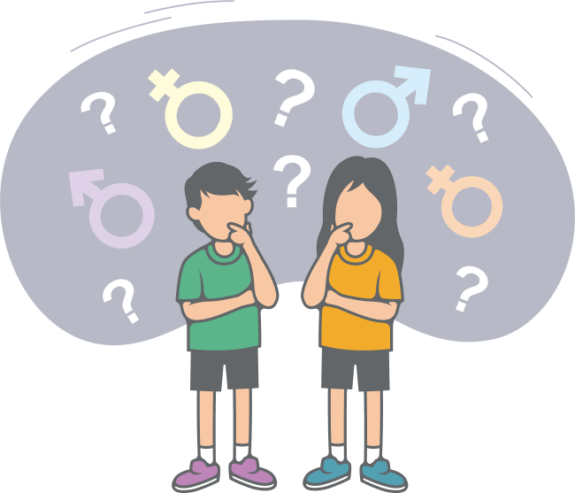

생각성의 의미

우리는 성을 어떻게 바라보고 있을까? 이에 대한 답을 찾기 위하여 회원이 많은 국내 인터넷 커뮤니티, 영상 공유 플랫폼과 사회 관계망 서비스(SNS) 등 우리가 이용하는 대중 매체에서 성을 어떻게 바라보는지 빅데이터를 통해 알아보았다. 그 결과 가슴, 성감대, 성기 등 직접적인 신체 묘사나 성행위를 나타내는 것 으로 바라보는 시각이 많았다. 또한 성에 대해 ‘야하다.’, ‘불편하다.’, ‘더럽다.’라는 등의 부정적인 느낌을 표현하는 경우도 많았다.
성에 대한 관점은 성적인 정보와 다른 사람의 영향 등이 겹겹이 쌓여 만들어 진다. 만약 성을 올바르게 이해하지 않은 채 무분별하게 성 지식을 습득하면 왜곡된 성 개념을 가질 위험이 있다. 무의식 속에서 성의 모습이 부정적인 요소로 표현되는 것 또한 이 때문이다.
- 이충민, 『성교육, 어떻게 할까』
● 성에 대한 올바른 이해가 필요한 까닭은 무엇일까?
성을 올바르게 이해하지 않은 채 무분별하게 성 지식을 습득하면 왜곡된 성 개념을 가질 위험이 있고, 이는 성에 대한 부정적인 인식으로 나아갈 가능성이 있기 때문이다.